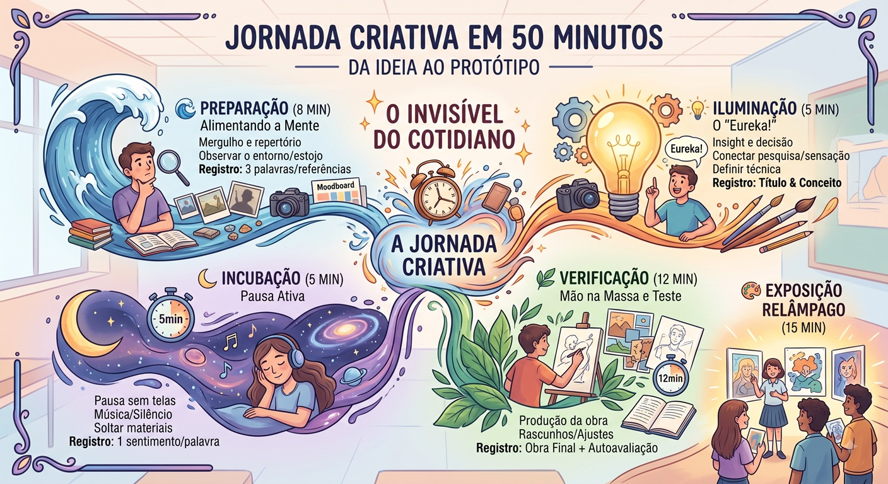

🧠 O Triângulo do Criador
Toda obra de arte começa com um olhar que ninguém mais teve. Em grupo, passem por estes três pilares:
① OLHAR (Mente 👁) — Observe o invisível ao redor. Alimente a mente com matéria-prima.
② CRIAR (Mão 🎨) — Coloque no papel. A ideia só existe quando ganha forma.
③ SENTIR (Coração ❤️) — O que a obra diz sobre vocês? Valor emocional.

🎨 "Aula dada é arte vivida HOJE!" — em grupo, criem sem medo.
🎴 Flashcards do Criador (clique para virar)
📌 Lembrete final: arte começa com um olhar. Sem olhar novo, a obra não nasce!